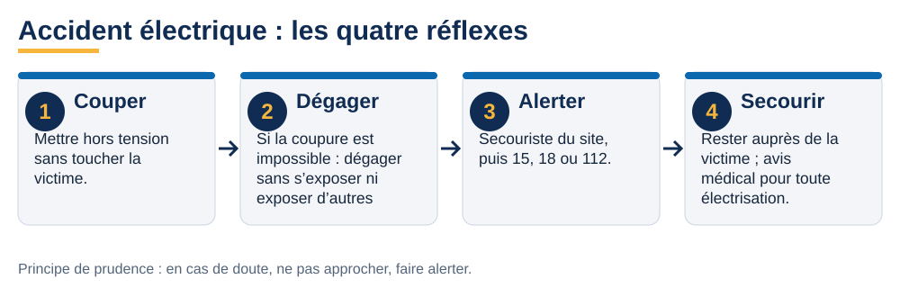
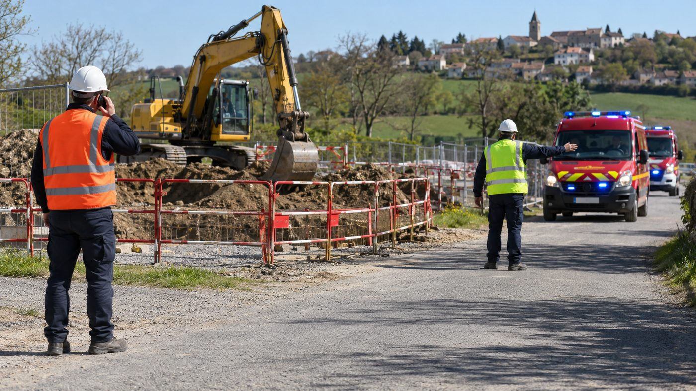
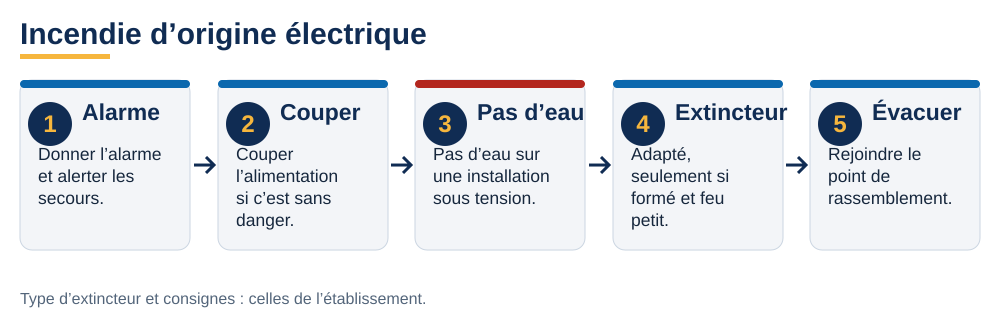
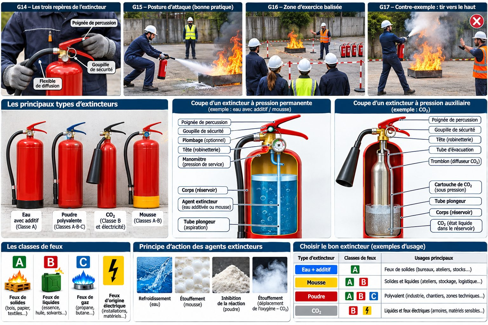
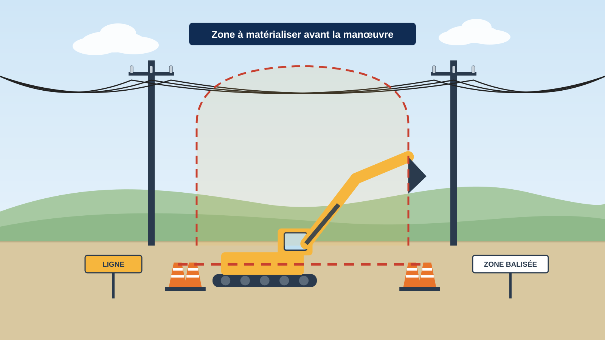
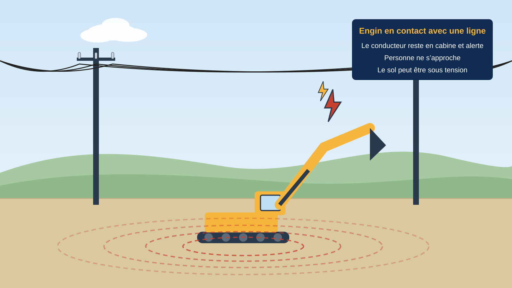

Synthèse de sécurité
Sur le site : secours et incendie
Une installation électrique n’est jamais seule : l’extérieur, la pluie, la poussière et le passage des engins changent la façon de réagir. Cette page donne les repères ; les consignes du site priment.
Limite à connaître. Ce support ne décrit pas les installations du site ni ses consignes internes. Elles se demandent le jour même et prévalent sur cette page.
Les gestes en détail. Protéger, examiner, alerter, secourir : démarche, illustrations et deux scénarios à choix sur la page 🚑 Secours. Recommandation forte : passer le SST ou le MAC SST (certificat de Sauveteur Secouriste du Travail et son maintien des compétences).
À demander à l’arrivée
Point de rassemblement et chemin d’évacuation · emplacement des extincteurs et des coupures d’urgence · procédure d’alerte interne et numéros à composer · secouristes présents · accès des secours au site (portail, piste, point de rencontre) · salle de formation et matériel disponible · consignes de circulation des engins.
Accident électrique : conduite à tenir

- Mettre hors tension sans toucher la victime.
- Si la coupure est impossible, dégager la victime sans s’exposer ni exposer d’autres personnes.
- Alerter : secouriste du site, puis SAMU (15), pompiers (18) ou 112.
- Secourir et rester auprès de la victime jusqu’à l’arrivée des secours.
Sur un site étendu, précisez à l’appel l’adresse, le point de rencontre et le chemin d’accès pour les secours ; faites attendre quelqu’un à l’entrée. En cas de doute sur la tension, ne pas approcher et faire alerter.
Alerte

- Donner son nom, le lieu exact (adresse, bâtiment, accès) et la nature de l’accident.
- Préciser le nombre de victimes, si la victime est consciente et si la coupure de l’alimentation est faite.
- Ne pas raccrocher avant d’y être invité ; envoyer quelqu’un attendre les secours à l’entrée du site.
Incendie d’origine électrique

- Donner l’alarme et faire alerter les secours.
- Couper l’alimentation de l’appareil ou du circuit concerné si cela peut se faire sans danger.
- Éviter l’eau sur une installation sous tension : l’eau peut conduire le courant (INRS : feu électrique sous 1 000 V, couper d’abord).
- Utiliser un extincteur adapté seulement si l’on a été formé et si le feu est petit ; sinon, évacuer et fermer portes et fenêtres derrière soi.
- Évacuer selon la consigne du site vers le point de rassemblement.

Le type d’extincteur et la conduite à tenir précis dépendent du site et du matériel en place : appliquer les consignes affichées et la formation incendie.
Extérieur, humidité, poussières

- L’humidité diminue la résistance du corps : un contact sans gravité à sec peut devenir dangereux.
- La pluie, la boue, la poussière et la corrosion altèrent les contacts, les isolants et les enveloppes : coffrets rouillés, capots cassés, câbles craquelés et traces d’échauffement sont des anomalies à signaler.
- Pas de lavage au jet ni de projection d’eau sur ou près d’un coffret, d’une prise ou d’un appareil sous tension.
- Les rallonges au sol, dans les flaques ou sur les pistes, sont à éviter : un câble écrasé, endommagé ou mouillé ne s’utilise pas.
- Un matériel mouillé ne se touche pas avant sa mise hors tension.
Lignes aériennes, câbles enterrés et engins


- Une ligne aérienne ou un câble enterré se repère avant le travail : demander les informations du site et respecter les marquages.
- Une zone de voisinage se matérialise et se surveille ; on n’y entre pas sans y être autorisé.
- Si un engin touche une ligne, le conducteur reste en cabine et alerte ; personne ne s’approche, car le sol autour peut être sous tension.
- Un câble découvert lors d’un terrassement s’arrête et se signale : on ne reprend qu’après les instructions du responsable.